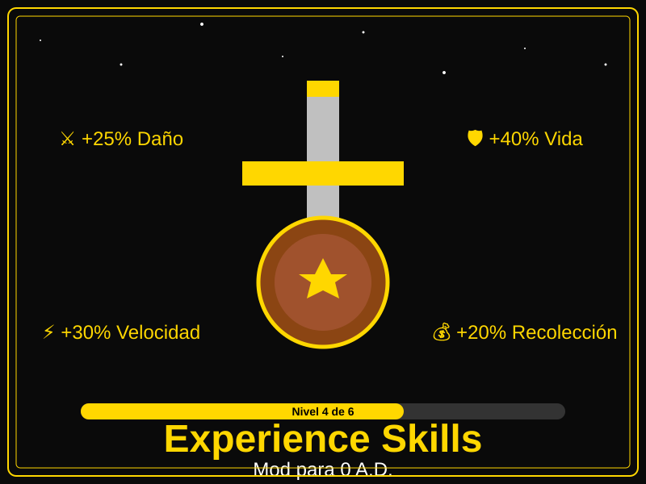

Experience Skills
"Las unidades mejoran con la práctica, como en la vida real"
Sistema de progresión con 13 habilidades (7 civiles + 5 militares + 1 civil oculta), 100 niveles y 5 rangos. Las unidades ganan experiencia al realizar acciones y mejoran sus capacidades. La barra de progreso aparece en el tooltip del retrato de la unidad.
⬇️ Descargar Mod📝 Descripción Detallada
Experience Skills es un sistema completo de progresión que asigna experiencia a cada unidad según su tipo y acción. A diferencia del sistema de rangos nativo de 0 A.D., este mod muestra una barra de progreso de texto en el tooltip del retrato de la unidad.
Cómo funciona: Las unidades ganan experiencia al realizar acciones específicas (recolectar, construir, curar, atacar, etc.). Cada 100 puntos de experiencia, la unidad sube de nivel. Al alcanzar ciertos niveles, desbloquea rangos que otorgan bonificaciones adicionales. La experiencia acumulada es persistente — no se pierde al guardar la partida.
Progresión: Cada nivel requiere 15 × 1.08^n puntos de experiencia (crecimiento exponencial). Hay 100 niveles posibles y 5 rangos: Recluta (nivel 1), Veterano (nivel 15), Élite (nivel 30), Héroe (nivel 50) y Legendario (nivel 75).
✨ Características Principales
- 13 habilidades: 7 civiles (Recolección, Construcción, Botín, Explotación, Caza, Pesca, Curación) + 5 militares (Infantería, Caballería, Asedio, Aeronaves, Marino) + 1 civil oculta
- 100 niveles por habilidad: Cada nivel requiere más experiencia que el anterior
- 5 rangos: Recluta → Veterano → Élite → Héroe → Legendario
- Barra de progreso: Se muestra en el tooltip al pasar el cursor sobre el retrato de la unidad
- Experiencia persistente: No se pierde al guardar la partida
- Idiomas: Español e Inglés — cambia según la localización de 0 A.D.
- Sin héroes: Las unidades heroicas no ganan experiencia
- Cálculo exponencial: Crecimiento 15×1.08^n para equilibrar el juego
🎯 ¿Qué Esperar de Este Mod?
Con este mod podrás:
- Ver la barra de progreso de experiencia en el tooltip del retrato
- Cuidar tus unidades experimentadas — son mucho más efectivas
- Crear ejércitos veteranos que desbloquean habilidades superiores
- Disfrutar de una progresión visual y satisfactoria
- Experimentar el juego con más profundidad estratégica
- Jugar en español o inglés desde las opciones de 0 A.D.
🔍 ¿Dónde Encontrarlo en el Juego?
El sistema funciona automáticamente. Para ver las habilidades:
- Haz clic en una unidad para seleccionarla
- Pasa el cursor del mouse sobre el retrato de la unidad en el panel de selección
- Se desplegará un tooltip con el título "Skills" y la lista de habilidades
- Cada habilidad muestra: nombre con color de rango, nivel, barra de progreso de texto (██░░) y efecto
Los datos de experiencia se guardan automáticamente con la partida.
⚙️ Información de Compatibilidad
Nota: Los textos de rangos y habilidades usan el sistema de localización de 0 A.D. El idioma se cambia desde las opciones del juego.
📋 Instrucciones de Instalación
- Descarga el mod: Haz clic en el botón de descarga de arriba.
- Busca la carpeta de 0 A.D.: Generalmente está en:
- Windows:
C:\Users\[TuUsuario]\Documents\My Games\0ad\mods - Linux:
~/.local/share/0ad/mods - Mac:
~/Library/Application Support/0ad/mods
- Windows:
- Crea una carpeta para el mod: Si no existe, crea una carpeta llamada
skills_moddentro de la carpeta "mods". - Copia los archivos: Extrae el archivo descargado y copia su contenido dentro de la carpeta
skills_mod. - Abre 0 A.D.: Inicia el juego.
- Activa el mod: Ve a Opciones → Mods, busca "Experience Skills" y actívalo.
- ¡Listo! Tus unidades ahora mejorarán con la práctica.
👥 Créditos
Autor: freddyeleazar
Versión: 0.1.0
Licencia: GPL v2 (como 0 A.D.)